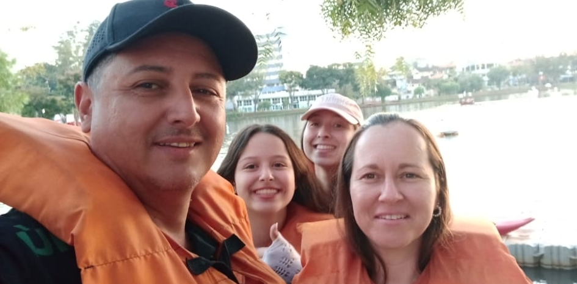
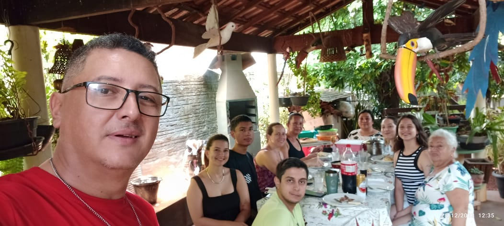

site onde irei contar um pouco sobre minha familia
 Minha familia é meio caótica,por mais que briguem muito, muito mesmo, eles se amam!
Bom, para começar vou falar um pouco dos meus avos paternos, eles começaram a trabalhar muito cedo, principalmente minha vó, ela teve que trabalhar muito na vida e sofreu muito, o marido dela veio falecer quando meu pai estava a só 3 meses na barriga dela, foi uma grande tristeza pois ela o amava muito e ele tambem a amava, ele ajudava minha vó com tudo e comprava tudo que ele precisava, depois de uns anos ela conheceu um outro homem cujo ficou junto por muitos anos e teve mais duas filhas com ele, porém ele esta endoidando e falava todo dia que iria matar minha vó e os filhos dela, a minha vó ficou com medo e resolveu se divorciar com ele, depois de uns anos ele morreu por ataque do coração.
minha avó materna também começou a trabalhar muito nova, não sei muito sobre ela pois ela faleceu quando eu tinha 9 anos, mas eu a amava.
o sobrenome Maruyama vem de origem japonesa, meu avô paterno nasceu e viveu por muitos anos no japao, e depois veio para o brasil. Praticamente toda a minha familia nasceu em londrina, menos minha vo paterna que nasceu no Pernambuco e meu pai que nasceu em Porto Alegre.
o ramo de trabalho nao foi mmuito bem o que eles queriam porem estam bem trabalhando neles. na minha familia ate esse momento por parte de mae tem 29 contando tias, primas e filhos delas e avós, por parte de pai tem apenas 13, a maioria moram em londrina, e os outros moram em outro estado porém no Sul.